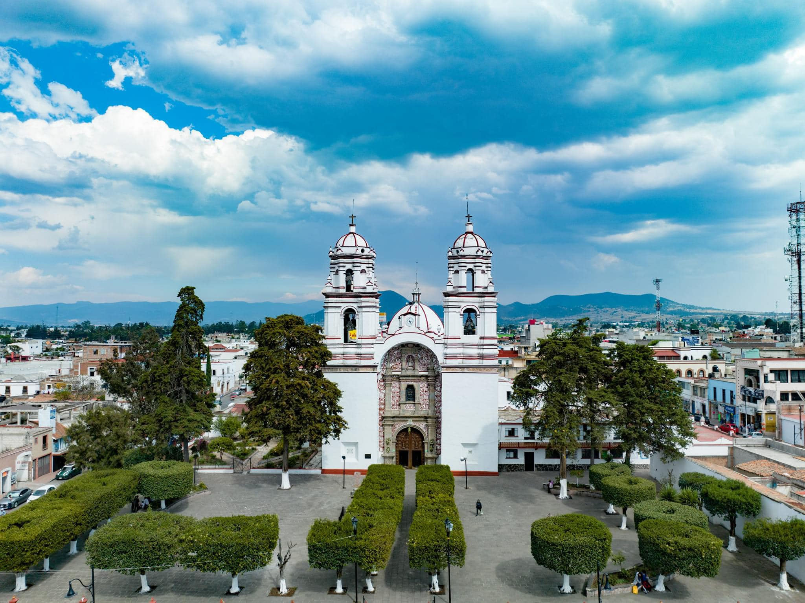
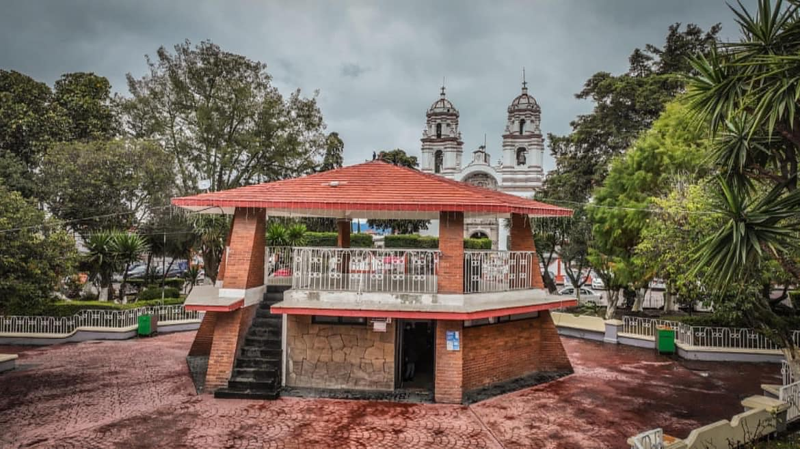
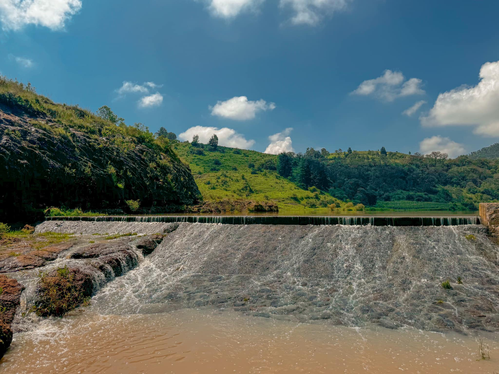
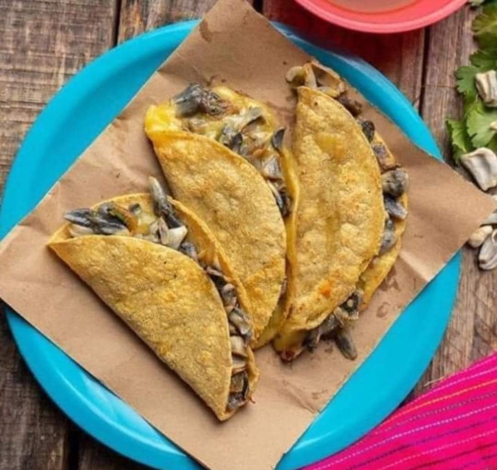
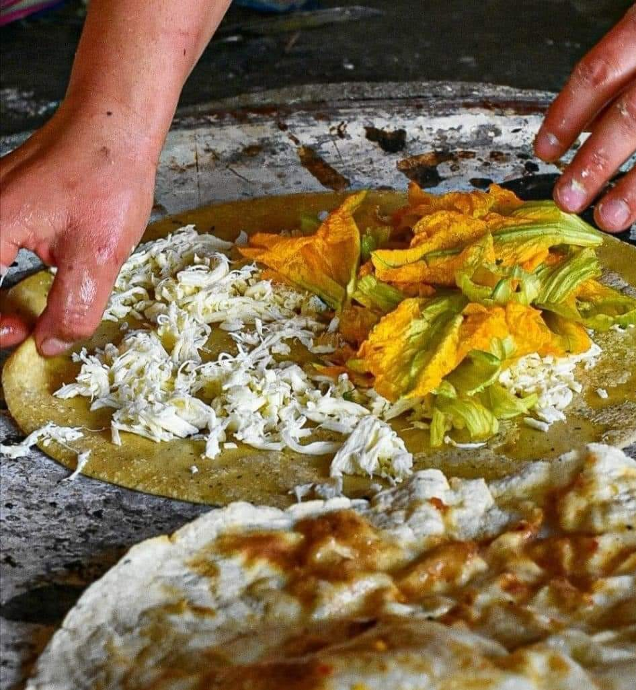
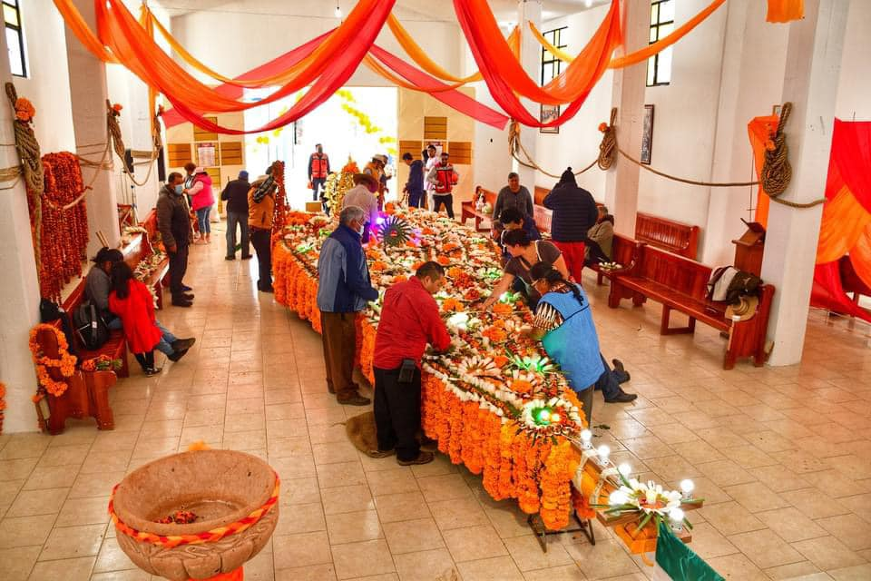
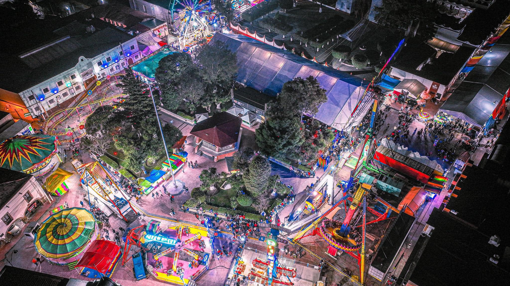
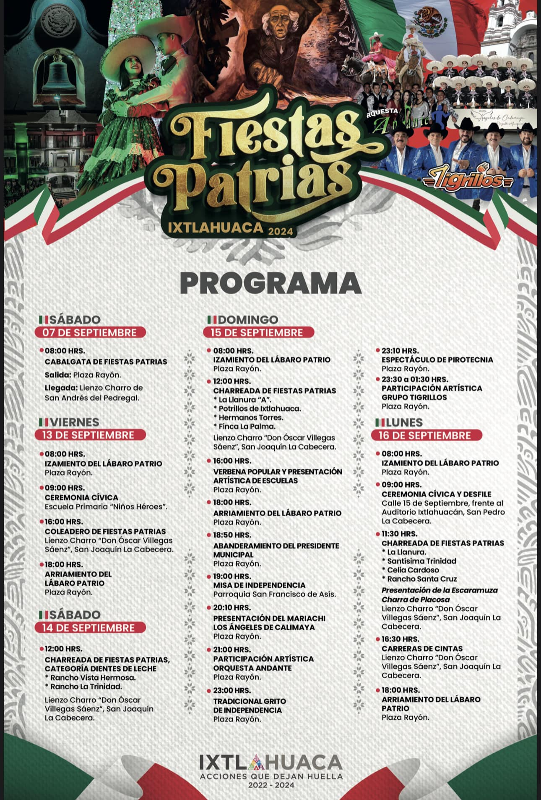

Rincones de Ixtlahuaca
Descubre la magia de Ixtlahuaca, un destino escondido que ofrece una combinación única de belleza natural y riqueza cultural. Desde sus impresionantes paisajes y atracciones hasta sus vibrantes festivales y deliciosa gastronomía, Ixtlahuaca promete una experiencia inolvidable.
Ubicación
Ixtlahuaca es una pintoresca localidad situada en el Estado de México, específicamente en la región central del país. Se encuentra aproximadamente a 90 kilómetros al sureste de la Ciudad de México, lo que la convierte en un destino accesible para quienes desean escapar del bullicio urbano y disfrutar de la tranquilidad y belleza natural que ofrece.
Lugares Turísticos
Catedral Mazahua
La Catedral Mazahua es la obra arquitectónica más grande de la región. Tiene una historia particular porque fue escenario de múltiples eventos históricos. Los primeros pobladores de Ixtlahuaca fueron mazahuas y fue testigo del paso de Miguel Hidalgo y Costilla rumbo al Monte de las Cruces.
Plaza Rayón
Nombre que ha recibido la explanada central de este municipio, como antecedente del decreto del 14 de noviembre de 1861, cuando la demarcación central del territorio de Ixtlahuaca fue reconocida con la categoría de Villa de Ixtlahuaca de Rayón.
Presa
Si buscas un lugar donde la naturaleza se entrelace con la tranquilidad, la presa en San Ildefonso, en los límites con El Rincón de los Perales en Ixtlahuaca, es el destino ideal. Durante tu visita, puedes disfrutar del sonido del agua y el canto de las aves mientras exploras los senderos que rodean la presa.
Gastronomía
Quesadillas de hongos
Las quesadillas de hongos son un delicioso platillo de la gastronomía mexicana, caracterizadas por su sencillez y sabor auténtico. Preparadas con tortillas de maíz recién hechas, estas quesadillas se rellenan con una mezcla de hongos silvestres, que aportan un sabor terroso y delicado, complementado por la suavidad del queso fundido.
Dulce de calabaza
Este dulce es un postre muy apreciado en la región, conocido por su sabor dulce y su textura. Se elabora a base de calabaza (o zapallo) que se cocina con azúcar, canela y, a veces, otros especias como clavo y anís. La calabaza se corta en trozos o se ralla, y se cocina a fuego lento en una mezcla de agua y azúcar hasta que se vuelve suave y transparente.

Quesadillas de Flor de Calabaza
Estas quesadillas se preparan utilizando tortillas de maíz, que pueden ser hechas a mano o compradas. La flor de calabaza, que es el ingrediente principal, tiene un sabor suave y ligeramente dulce. Para prepararlas, se coloca la flor de calabaza dentro de la tortilla junto con otros ingredientes como queso, normalmente queso Oaxaca o quesillo, que se funde al calentarse.
Eventos y Festividades
Feria Patronal de San Francisco de Asís Ixtlahuaca
Una de las fiestas tradicionales del municipio de Ixtlahuaca, es sin duda la celebrada el 4 de octubre con motivo del Santo Titular del municipio, San Francisco de Asís, al cual asisten diariamente procesiones de cada pueblo que traen a su Santo Patrón con música, flores, incienso, cánticos y cohetes y lo colocan al lado del Santo Titular para acompañarlo en su día.
 Fiestas patrias
Las Ferias Patrias en Ixtlahuaca son celebraciones destacadas que tienen lugar en este municipio del Estado de México. Estas festividades suelen ocurrir durante el mes de septiembre, en conmemoración del Día de la Independencia de México. A continuación se comparte el programa "Fiestas Patrias Ixtlahuaca 2024".
